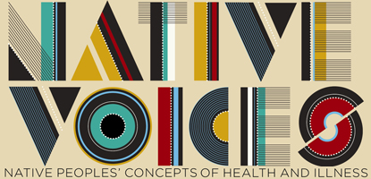
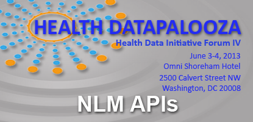
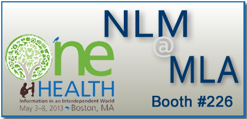

Databases

A Multimedia Exhibition for Visitors of All Ages
Native Voices explores the interconnectedness of wellness, illness, and cultural life of Native peoples.

NLM Participates in Health Datapalooza IV
NLM data experts join more than 1,500 innovators and leaders at national conference on liberating health data.
Every Necessary Care and Attention
Learn how George Washington focused considerable attention on the health and safety of his family, staff, slaves, and troops.

NLM at the MLA 2013 Annual Meeting
View presentations featured at the NLM exhibit booth at the Medical Library Association Annual Meeting (May 3-8, 2013).
Explore NLM
Research at NLM
NLM for You
News & Events

- NLM's Sappol and Reznick Honored by ALHHS; Medical Heritage Library Also Honored (05/23/13)
- NLM Announces New Funding Opportunity: Disaster Health Information Outreach and Collaboration Projects 2013 (05/22/13)
- NLM to Participate in Health Datapalooza IV (05/21/13)
- NLM Lends from Its Historical Collections to The Metropolitan Museum of Art (05/16/13)